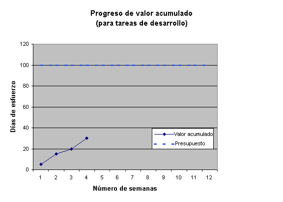
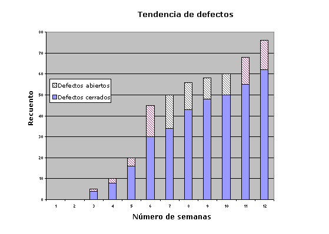
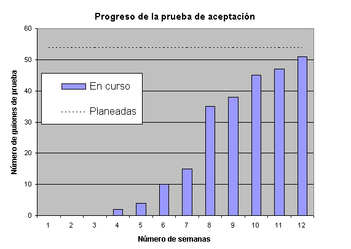

| Directriz: Métrica |
 |
|
| Elementos relacionados |
|---|
Principios
Taxonomía de la métricaLas métricas para ciertos aspectos del proyecto incluyen:
Las Tendencias son importantes, y algo más importantes de supervisar que cualquier valor absoluto en el tiempo.
Un conjunto de métrica mínimoIncluso en los proyectos más pequeños se desea hacer un seguimiento del progreso a fin de determinar si el proyecto se encuentra dentro de la planificación y el presupuesto y, si no es así, volver a calcular y determinar de nuevo si deben realizarse cambios de ámbito. Por tanto, este conjunto de métrica mínimo se centra en la métrica de progreso.
Se describen con detalle más abajo. Valor acumuladoEl método que se utiliza más comúnmente ([PMI96]) para medir el progreso es el Análisis del valor acumulado. El proceso más sencillo para medir el valor acumulado consiste en sumar el esfuerzo calculado original de todas las tareas completadas. Un "porcentaje completo" para el proyecto se puede calcular como valor acumulado dividido por el esfuerzo calculado original total para el proyecto. La productividad (o índice de rendimiento) es el valor acumulado dividido por el esfuerzo real dedicado a las tareas completas. Por ejemplo, suponga que se divide el esfuerzo de codificación en varias tareas, muchas de las cuales ahora ya se han completado. El cálculo original para las tareas completadas era de 30 días de esfuerzo. El esfuerzo calculado total para el proyecto era de 100 días, por lo que se puede deducir se ha completado, aproximadamente, el 30 % del proyecto. 
Suponga que las tareas se han completado bajo presupuesto, y que necesita sólo 25 días para completarlas. El índice de
rendimiento es 30 / 25 = 1,2 ó 120 %. Consideraciones
Si las tareas son largas (más de 5 días), o hay un gran número de tareas completas parcialmente, es posible que desee descomponerlas en factores en el análisis. Aplique un "porcentaje de terminación" subjetivo, multiplíquelo por el cálculo de esfuerzo de la tarea e inclúyalo en el valor acumulado. Se obtiene mayor coherencia en los resultados si existen reglas claras para asignar el porcentaje completo. Por ejemplo, una regla podría ser que no se asigna más del 80 % completada a una tarea de codificación hasta que el código haya pasado una revisión de código.
El valor acumulado se trata más adelante, en la sección Un conjunto de métrica completo: Plan
del proyecto. Tendencia de defectosCon frecuencia, resulta útil hacer un seguimiento de la tendencia de los defectos abiertos y cerrados. Ofrece una indicación aproximada sobre si existe una acumulación importante de trabajo de arreglo de defectos que completar y con qué rapidez se cierran.  Las tendencias de defectos sólo son una de las métricas que proporciona Rational ProjectConsole. Consideraciones
Tendencia de progreso de la prueba
La última medida de completitud es la funcionalidad integrada.
Un procedimiento muy sencillo para comunicar el progreso es con una Tendencia de progreso de la prueba.  ConsideracionesAlgunos casos de prueba pueden representar considerablemente más valor o esfuerzo que otros. No le atribuya una excesiva importancia a este gráfico, sólo proporciona algún tipo de garantía de que se progresa hacia la funcionalidad completa.Un pequeño conjunto de métricaPara muchos proyectos, el conjunto de métrica mínimo descrito previamente no es suficiente. Software Project Management, a Unified framework [ROY98], recomienda el conjunto de métrica siguiente para todos los proyectos. Tenga en cuenta que esta métrica requiere cifras reales y estimadas de SLOC (Líneas de código fuente) para cada solicitud de cambio, cuya recogida requiere algo de esfuerzo adicional. Métrica y métrica primitiva
Métrica de calidad para el producto finalDe este pequeño conjunto de métrica se pueden derivar métricas más interesantes:
Indicadores en curso
Un conjunto de métrica completo
¿Qué se debe medir?
|
||||||||||||||||||||||||||||||||||||||||||||||||||||||||||||||||||||||||||||||||||||||||||||||||||||||||||||||||||||||||||||||||||||||||||||||||||||||||||||||||||||||||||||||||||||||||||||||||||||||||||||||||||||||||||||||||||||||||||||||
|
Métrica |
Comentarios |
|---|---|
| Duración | Tiempo transcurrido para la tarea |
| Esfuerzo | Unidades de esfuerzo de personal (horas del personal, días del personal, ...) |
| Salida | Productos de trabajo y su tamaño y cantidad (tenga en cuenta que incluye los defectos como una salida de las actividades de la prueba) |
| Uso del entorno de desarrollo de software | CPU, almacenamiento, herramientas de software, equipo (estaciones de trabajo, PC), disponibles. Tenga en cuenta que la autoridad de entorno de ingeniería de software (SEEA) los puede recopilar para un proyecto. |
| Defectos, índice de descubrimiento, índice de corrección. | También se debe medir el tiempo/esfuerzo total de reparación y revisión/descarte total (siempre que se pueda medir); probablemente procedan de la información recopilada comparada con los defectos (considerados como productos de trabajo). |
| Solicitudes de cambio, índice de imposición, índice de desechos. | Comentarios como más arriba para tiempo/esfuerzo. |
| Otros incidentes que pueden tener una relación con estas métricas (texto de formato libre) | Es una métrica en la que hay un registro de un suceso que ha afectado al proceso. |
| Personal, perfil (en el tiempo) y características | |
| Rotación del personal | Una métrica útil que puede explicar en una revisión posmortem porqué un proceso se ha desarrollado especialmente bien, o mal. |
| Aplicación de esfuerzo |
El modo en el que se gasta el esfuerzo durante el rendimiento de las actividades planeadas (contra el
que se debería registrar formalmente el tiempo para la gestión de cuentas de costes) puede ayudar a
explicar las variaciones en la productividad: algunas subclases de la aplicación de esfuerzo son, por
ejemplo:
|
| Inspecciones, ensayos, revisiones (durante una tarea, no revisiones planificadas por separado) | Registrar los números de estas y su duración, así como los números de las cuestiones planteadas. |
| Desviaciones del proceso (planteadas como incumplimientos y que requieren cambio de proyecto) | Registrar los números y la gravedad de las mismas. Es un indicador de que es posible que se requiera más educación, de que el proceso no se aplica adecuadamente, o bien, de que el modo en el que se ha configurado el proceso no era correcto |
| Problemas del proceso (planteadas como defectos de proceso y que requieren cambio de proceso) | Registrar el número y la gravedad de las mismas. Esta información puede ser de gran utilidad en las revisiones posmortem y es una información de retorno esencial para la autoridad de proceso de ingeniería de programas (SEPA). |
El Producto
Los productos de Rational Unified Process (RUP) son los Productos de trabajo, que son documentos, modelos o elementos de modelo. Los modelos son recopilaciones de cosas parecidas (los elementos de modelo), por lo que aquí se listan las métricas recomendadas con los modelos a los que se aplican: normalmente, resulta obvio si una métrica se aplica al modelo en conjunto, o a un elemento. En aquellos casos en los que no está claro, se facilita texto explicativo.
Características del producto de trabajo
Por lo general, las características que interesa medir son las siguientes:
- Tamaño - medida del número de cosas en un modelo, la longitud de algo, el alcance o la masa de algo
- Calidad
- Defectos - indicaciones de que un producto de trabajo no funciona según se ha especificado, de que no cumple con su especificación, o bien, de que tiene otras características no recomendables.
- Complejidad - medida de lo intrincado de una estructura o algoritmo: cuanto mayor sea la complejidad, más difícil será comprender y modificar una estructura, y es un hecho que las estructuras complejas tienen más probabilidades de dar error
- Acoplamiento - medida de hasta qué punto están interconectados los elementos de un sistema
- Cohesión - medida del nivel de cumplimiento del requisito de tener un objetivo único y bien definido por parte de un elemento o componente
- Calidad de primitivo - grado hasta el que las operaciones o los métodos de una clase puede constar de otros que ofrece la clase
- Completitud - medida del nivel de cumplimiento de todos los requisitos por parte de un producto de trabajo (especificado e implícito-el gestor de proyectos debe esforzarse a fin de explicitar lo máximo posible con el objeto de limitar el riesgo de expectativas no satisfechas). En este punto no se ha optado por diferenciar entre suficiente y completa.
- Rastreabilidad - indicación de que los productos de trabajo han satisfecho los requisitos en un nivel, en un nivel inferior y, por otra parte, que un producto de trabajo de cualquier nivel tiene un motivo para existir
- Volatilidad - nivel de cambio o carácter inconcluyente de un producto de trabajo debido a defectos o requisitos cambiantes
- Esfuerzo - medida del trabajo (unidades de tiempo del personal) que se necesita para producir un producto de trabajo
No todas estas características se aplican a todos los productos de trabajo: las más importantes se elaboran con el producto de trabajo concreto en las tablas siguientes. Donde se listan numerosas métricas para una característica, todas pueden ser de interés, puesto que ofrecen una descripción completa de la característica desde varios puntos de vista. Por ejemplo, cuando se considera la rastreabilidad de los casos de uso, finalmente, todos se tienen que poder rastrear hasta un modelo de implementación (probado): entretanto, el gestor de proyectos sigue interesado en saber cuántos casos de uso se pueden rastrear para el modelo de análisis, como medida de progreso.
Documentos
La métrica recomendada se aplica a todos los documentos de RUP.
|
Característica |
Métrica |
|---|---|
| Tamaño | Recuento de páginas |
| Esfuerzo | Unidades de tiempo del personal para producción, cambios y reparaciones |
| Volatilidad | Número de cambios, defectos, abiertos, cerrados: cambiar páginas |
| Calidad | Medida directamente a través del recuento de defectos |
| Completitud | No se mide directamente: se juzga a través de la revisión |
| Rastreabilidad | No se mide directamente: se juzga a través de la revisión |
Modelos
Requisitos
Atributos de requisitos
En realidad, es un elemento de modelo.
Característica Métrica Tamaño
- número de requisitos en total (= Nu+Nd+Ni+Nt)
- número a rastrear para casos de uso ( = Nu)
- número a rastrear sólo para diseño, implementación, prueba ( = Nd)
- número a rastrear sólo para implementación, prueba ( = Ni)
- número a rastrear sólo para prueba ( = Nt)
Recuerde que esto particiona los requisitos entre los que van a modelar los casos de uso y los que no. La expectativa es que la rastreabilidad de los casos de uso tenga en cuenta los requisitos asignados a casos de uso, para hacer un seguimiento del diseño, la implementación y la prueba.
Esfuerzo
- Unidades de tiempo del personal (producción, cambios y reparaciones)
Volatilidad
- Número de defectos y solicitudes de cambio
Calidad
- Número de defectos, por gravedad
Rastreabilidad
- Rastreabilidad de los requisitos para UC = Rastreable para el modelo de caso de uso/Nu
- Rastreabilidad del diseño = Rastreable para el modelo de diseño/Nd
- Rastreabilidad de la implementación = Rastreable para el modelo de implementación/(Nd+Ni)
- Rastreabilidad de la prueba = Rastreable para el modelo de prueba/(Nd+Ni+Nt)
Característica Métrica Tamaño
- Número de casos de uso
- Número de paquetes de casos de uso
- Nivel de caso de uso notificado (consulte la documentación, "The Estimation of Effort and Size based on Use Cases" del sitio web de IBM)
- Número de casos de ejemplo, total y por caso de uso
- Número de actores
- Longitud del caso de uso (por ejemplo, páginas de flujo de sucesos)
Esfuerzo
- Unidades de tiempo del personal con producción, cambios y reparaciones
Volatilidad
- Número de defectos y solicitudes de cambio
Calidad
- Complejidad notificada (0-5, por analogía con COCOMO [BOE81], a nivel de clase; el rango de complejidad es más reducido cuanto mayores son los niveles de abstracción - consulte la documentación, "The Estimation of Effort and Size based on Use Cases" del sitio web de IBM)
- Defectos - número de defectos, por gravedad, abiertos, cerrados
Completado
- Guiones de uso completados (revisados y bajo gestión de la configuración sin defectos pendientes)/casos de uso identificados (o número de casos de uso calculados)
- Rastreabilidad de los requisitos para UC (de atributos de requisitos)
Rastreabilidad
- Análisis
- Casos de ejemplo realizados en casos de ejemplo totales/modelo de análisis
- Diseño
- Casos de ejemplo realizados en casos de ejemplo totales/modelo de diseño
- Implementación
- Casos de ejemplo realizados en casos de ejemplo totales/modelo de implementación
- Prueba
- Casos de ejemplo realizados en casos de ejemplo totales/modelo de prueba (casos de prueba)
Diseño
Característica Métrica Tamaño
- Número de clases
- Número de subsistemas
- Número de subsistemas de subsistemas ...
- Número de paquetes
- Métodos por clase, internos, externos
- Atributos por clase, internos, externos
- Nivel de árbol de herencia
- Número de hijos
Esfuerzo
- Unidades de tiempo del personal para producción, cambios y reparaciones
Volatilidad
- Número de defectos y solicitudes de cambio
Calidad Complejidad
- Respuesta para una clase (RFC): puede resultar difícil calcularlo, puesto que se necesita un conjunto completo de diagramas de interacción.
Acoplamiento
- Número de hijos
- Acoplamiento entre objetos (ramificación de clases)
Cohesión
- Número de hijos
Defectos
- Número de defectos, por gravedad, abiertos, cerrados
Completado
- Número de clases completadas/número de clases calculadas (identificadas)
- Rastreabilidad del análisis (en el modelo de caso de uso)
Rastreabilidad No aplicable-el modelo de análisis se convierte en el modelo de diseño.
Aquí se muestra métrica técnica específica de OO con la que es posible que no esté familiarizado-nivel de árbol de herencia, número de hijos, respuesta para una clase o acoplamiento entre objetos, entre otras. Consulte [HEND96] para obtener información detallada sobre el significado y la historia de dicha métrica. Originalmente, Chidamber and Kemerer sugirieron gran parte de esta métrica (consulte "A metrics suite for object oriented design", IEEE Transactions on Software Engineering, 20(6), 1994), pero aquí se ha aplicado tal como se sugiere en [HEND96], y se preferido la definición de LCOM (falta de cohesión en los métodos) que se presenta en dicho trabajo.
Característica Métrica Tamaño
- Número de clases
- Número de subsistemas de diseño
- Número de subsistemas de subsistemas ...
- Número de paquetes
- Métodos por clase, internos, externos
- Atributos por clase, internos, externos
- Nivel de árbol de herencia
- Número de hijos
Esfuerzo
- Unidades de tiempo del personal (para producción, cambios y reparaciones)
Volatilidad
- Número de defectos y solicitudes de cambio
Calidad Complejidad
- Respuesta para una clase (RFC): puede resultar difícil calcularlo, puesto que se necesita un conjunto completo de diagramas de interacción.
Acoplamiento
- Número de hijos
- Acoplamiento entre objetos (ramificación de clases)
Cohesión
- Número de hijos
Defectos
- Número de defectos, por gravedad
Completado
- Número de clases completadas/número de clases calculadas (identificadas)
- Rastreabilidad del diseño (en el modelo de caso de uso)
- Rastreabilidad del diseño (en atributos de requisitos)
Rastreabilidad Número de clases en modelo de implementación/número de clases
Implementación
Característica Métrica Tamaño
- Número de clases
- Número de archivos
- Número de subsistemas de implementación
- Número de subsistemas de subsistemas ...
- Número de paquetes
- Métodos por clase, internos, externos
- Atributos por clase, internos, externos
- Tamaño de métodos*
- Tamaño de atributos*
- Nivel de árbol de herencia
- Número de hijos
- Tamaño calculado* al terminar
Esfuerzo
- Unidades de tiempo del personal (con producción, cambios y reparaciones separados)
Volatilidad
- Número de defectos y solicitudes de cambio
- Ruptura* para cada cambio correctivo o perfectivo, calculado (antes del arreglo) y real (al concluir)
Calidad Complejidad
- Respuesta para una clase (RFC)
- Complejidad ciclomática de los métodos**
Acoplamiento
- Número de hijos
- Acoplamiento entre objetos (ramificación de clases)
- Mensaje pasando acoplamiento (MPC)***
Cohesión
- Número de hijos
- LCOM (falta de cohesión en los métodos)
Defectos
- Número de defectos, por gravedad, abiertos, cerrados
Completado
- Número de clases de unidad probadas/número de clases en modelo de diseño
- Número de clases integradas/número de clases en modelo de diseño
- Rastreabilidad de la implementación (en modelo de caso de uso)
- Rastreabilidad de la implementación (en atributos de requisitos)
- Rastreabilidad del modelo de prueba multiplicada por Completitud de la prueba
- Integración activa y tiempo de prueba del sistema (acumulado del proceso de prueba), es decir, tiempo con el sistema en funcionamiento (utilizado para el cálculo de madurez)
* Se debe elegir y aplicar de modo coherente algún método para medir el tamaño de código, por ejemplo, sin comentarios, sin espacios vacíos. Consulte [ROY98], donde se tratan los méritos y la aplicación de "líneas de código" como una métrica. En la misma referencia, consulte la definición de "ruptura".
** El uso de la complejidad ciclomática no se acepta universalmente, en especial, cuando se aplica a los métodos de una clase. Consulte [HEND96], donde se trata esta métrica.
*** Originalmente, de Li and Henry, "Object-oriented metrics that predict maintainability", J. Systems and Software, 23(2), 1993, y también descrito en [HEND96].
Prueba
Modelo de prueba
Característica Métrica Tamaño
- Número de casos de prueba, procedimientos de prueba, scripts de prueba
Esfuerzo
- Unidad de tiempo del personal (con producción, cambios y reparaciones separados) para producción de casos de prueba, entre otros
Volatilidad
- Número de defectos y solicitudes de cambio emitidos contra el modelo de prueba
Calidad
- Defectos - número de defectos por gravedad, abiertos, cerrados (son defectos planteados en comparación con el modelo de prueba en sí mismo, no defectos que plantea el equipo de prueba en comparación con otro software)
Completitud
- Número de casos de prueba escritos/número de casos de prueba calculados
- Rastreabilidad de la prueba (en el modelo de caso de uso)
- Rastreabilidad de la prueba (en atributos de requisitos)
- Cobertura de código
Rastreabilidad
- Número de casos de prueba sobre los que se ha informado como satisfactorios en el Resumen de evaluación de prueba de casos de uso
Gestión
Modelo de cambio -modelo nocional para la coherencia en la presentación- la métrica que se recopila del sistema se utiliza para gestionar solicitudes de cambio.
Característica Métrica Tamaño
- Número de defectos, solicitudes de cambio por gravedad y estado, también clasificados por categorías como número de cambios perfectivos, número de cambios de adaptación y número de cambios correctivos.
Esfuerzo
- Esfuerzo de reparación de defectos, esfuerzo de implementación de cambios en unidades de tiempo del personal
Volatilidad
- Ruptura (calculada, real) para el subconjunto del modelo de implementación
Completado
- Número de defectos descubiertos/número de defectos pronosticados (si se utiliza un modelo de fiabilidad)
Plan del proyecto (sección 4.2 del Plan de desarrollo de software)
Son medidas que proceden de la aplicación de Técnica de aplicación para la gestión de proyectos: juntas se denominan Cost/Schedule Control Systems Criteria (C/SCSC). Una técnica de valor acumulado descrita más arriba como parte de Un conjunto de métrica mínimo. Se pueden llevar a cabo análisis más detallados utilizando métrica relacionada, incluidas:
- BCWS, Budgeted Cost for Work Scheduled
- BCWP, Budgeted Cost for Work Performed
- ACWP, Actual Cost of Work Performed
- BAC, Budget at Completion
- EAC, Estimate at Completion
- CBB, Contract Budget Base
- LRE, Latest Revised Estimate (EAC)
factores derivados para la variación de coste y planificación. Consulte [ROY98], donde se trata la aplicación de una propuesta de valor acumulado a la gestión de proyectos de software.
El Proyecto
El proyecto se debe caracterizar en términos de tipo, tamaño, complejidad y formalidad (aunque, por lo general, el tipo, el tamaño y la complejidad determinan la formalidad), puesto que estos aspectos condicionan las expectativas sobre distintos umbrales para medidas de nivel inferior. Se deben capturar otras restricciones en el contrato (o especificaciones). La métrica derivada del proceso, el producto y los recursos captura el resto de la métrica a nivel del proyecto. El dominio y el tipo de proyecto se pueden registrar por medio de una descripción de texto, asegurándose de que se detalla lo suficiente para caracterizar con precisión el proyecto. Registre el tamaño del proyecto por el coste, el esfuerzo, la duración, el tamaño del código que desarrollar y los puntos de función que entregar. La complejidad del proyecto se puede describir -algo subjetivamente-situando el proyecto en un gráfico en el que se muestre la complejidad técnica y de gestión con respecto a otros proyectos completados. [ROY98], la Figura 14-1 muestra un diagrama.
La métrica derivada descrita en [ROY98], que son los indicadores principales del gestor de proyectos, se puede obtener de la métrica recogida para el producto y el proceso. Son las siguientes:
- Modularidad = ruptura promedio (NCNB*) por cambio correctivo o perfectivo en el modelo de implementación
- Adaptabilidad = esfuerzo promedio por cambio correctivo o perfectivo en el modelo de implementación
- Madurez = número/tiempo prueba activa de cambios correctivos
- Mantenimiento = Productividad de mantenimiento/productividad de desarrollo = [arreglos acumulativos reales/esfuerzo acumulativo por cambios correctivos y perfectivos]/[número calculado de NCNB al terminar/esfuerzo de producción calculado al terminar]
- Estabilidad de revisión = ruptura acumulativa-arreglos acumulativos
- Acumulación de revisiones = [ruptura acumulativa-arreglos acumulativos]/unidad NCNB probada
* NCNB es tamaño de código sin comentarios y sin espacios vacíos.
Se debe informar del progreso desde el plan del proyecto utilizando la métrica de terminación del producto de trabajo - con peso concreto (desde una perspectiva de valor acumulado) que proporciona la producción del software de trabajo.
Si se utiliza un modelo de cálculo como, por ejemplo, COCOMO (consulte [BOE81], se deben registrar los distintos factores de escala y controladores de costes. En realidad, forman una caracterización bastante detallada del proyecto.
Los Recursos
Los elementos que medir incluyen personal (experiencia, formación, coste, rendimiento), métodos y herramientas (en términos de efecto en la productividad, la calidad y el coste), tiempo, esfuerzo, presupuesto (recursos consumidos, recursos restantes).
El perfil del personal se debe registrar a lo largo del tiempo, mostrando el tipo (analista o diseñador, por ejemplo), el grado (que implica el coste) y el equipo al que se ha asignado. Se deben registrar tanto las cifras reales como las planeadas.
El modelo COCOMO requiere la caracterización del entorno de desarrollo de software, así como la posibilidad y experiencia personales, para que se constituya una infraestructura adecuada en la que mantener esta métrica.
La información sobre gastos, presupuesto y planificación proceden del plan del proyecto.
© Copyright IBM Corp. 1987, 2006. Reservados todos los derechos. |